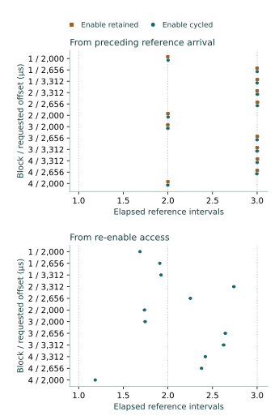

Question and rationale
The pacing-divider comparison established reversible changes in arrival spacing, while the restart investigation found alignment with the preceding cadence across stop/restart. Does disabling and re-enabling the converter change that timing origin? This investigation compares both interventions at the two characterized divider settings, retaining the clock and selected input.
The purpose is to establish which component controls can govern acquisition timing for subsequent physical Seigsit creation and transfer. Queue-arrival records characterize the apparatus; they do not establish distinguishable transported states or a physical Seigsit.
Method
Retain ADC divider A=0x00ffff00 and B=0x00dfff00 in A–B–B–A order, internal input 4 and existing clock controls. Every condition begins with a four-millisecond observed continuous reference, followed by stop, bounded readiness polling and local recovery to empty. The last unit occupancy increase supplies the reference arrival bracket.
While stopped and empty, either retain converter enable with two control reads, or write CS=0x4002 to disable and CS=0x4003 to re-enable. Both variants contain a 200 µs counter-only interval between their two accesses. Record preceding, requested and returned controls, actual accesses and wait counters. Then require enabled readiness, an empty queue and the retained divider before proceeding. A failed intervention or missed restart deadline refuses the restart.
Each block contains ten conditions: one no-command control after enable cycling; paired retained-enable and enable-cycle observed continuous restarts at offsets 2,000, 2,656 and 3,312 µs; a quiet continuous pair at 2,656 µs; and one single-command control after enable cycling. Blocks 2 and 4 reverse the complete order. Offsets are measured from the reference arrival's upper counter. The subsequent acquisition window is four milliseconds; actual command timing remains separately recorded.
No FIFO consumption occurs inside either acquisition window. No SD persistence occurs between reference acquisition and restart stopping. After the combined report is persisted, recover the restart queue, check a two-millisecond stopped interval, then continue. Final cleanup restores converter, queue, divider and clock. Each observed window permits at most sixteen changes and 262,144 completed status reads; each recovery permits sixteen entries. These bounds are software capacities.
Assessment criteria
Acceptance requires admitted divider settings, complete interventions and sequence, no-command controls with zero entries, single-command controls with one, error-free recovery, empty stopped checks and restoration. Arrival alignment, spacing and continuous counts are measured outcomes.
Each observed occupancy change is bounded from the preceding status read's first counter to the changed read's last counter. Consecutive brackets bound later spacing. For each observed continuous restart, compare its first arrival with integer multiples of the immediately preceding reference's common spacing interval. Separately compare enable-cycle first arrivals with multiples measured from the re-enable access bracket. Compatibility with the preceding cadence and compatibility with a timing origin at re-enable are distinct questions.
The intervals are conservative compatibility bounds, not confidence intervals. The second comparison tests an integer-period origin within the re-enable access; it does not exclude every possible internal reset followed by an unknown latency.
Preparation and implementation
Candidate 73103A41FB4C adds 119 literal SEIGRASM instruction words at byte 2988 of the RP1 instruction source. The preceding instruction bytes and the seven other instruction sources remain unchanged. The native entry combines reference, local recovery, six intervention steps and arrival-referenced restart into a 450-cell report. The coordinator schedules 277 operations and at most 2,969 records.
All 44 image-bound supplied-response checks passed. They include retained and changed timing origins, ignored disable/enable writes, failed readiness or admission, reference/recovery failure, late intervention, incomplete records and restoration. PC tools package authored opcodes and decode the recording; no foreign compiler produces the target implementation. The frozen protocol specifies three minutes powered. Both installation readbacks matched the prepared image.
ROM/EEPROM entry, AArch64 execution and counter, SD and PCIe/RP1 interfaces, retained bridge configuration, RP1 xosc and existing component firmware state remain apparatus dependencies. The acquisition sequence makes no firmware-service request. This experiment does not replace those dependencies.
Results
All 2,969 records, 277 operations and 40 conditions completed with accepted execution. All twelve observed continuous enable-cycle conditions and all twelve retained-enable controls were compatible with continuation of the immediately preceding arrival cadence. The first restarted arrival aligned with two reference intervals at offset 2,000 µs and three at 2,656 and 3,312 µs.
None of the twelve observed continuous enable-cycle conditions was compatible with an integer-period origin inside the re-enable access bracket. All twelve instead remained compatible with the preceding reference. This supports retained cadence across the tested enable cycle; the internal timing mechanism remains unresolved.

Observed control transitions
All 24 enable-cycle conditions recorded CS=0x4103 before disabling and 0x4002 afterwards. Re-enable recorded the reverse transition to 0x4103, following the requested 0x4003. Each action reported one write and two reads. All sixteen retained-enable conditions recorded 0x4103 at both accesses and no intervention write. Every following readiness check succeeded on its first read, and every empty-queue and retained-divider check passed.
The 200 µs requested interval measured 200.222–200.722 µs in retained-enable conditions and 200.241–200.722 µs in enable-cycle conditions. Across the latter, the access brackets bound the disabled interval between 202.704 and 210.333 µs. These are bounds derived from recorded accesses, not direct measurements of internal switching instants.
Spacing and retained counts
All 149 later-spacing brackets from references and observed continuous restarts were retained. Every block had a common intersection. Both B intervals remained shorter than A; each of the four B/A comparisons includes 0.875 and excludes 1. The observed spacing is also compatible with the preceding divider experiment.
| Block / setting | Brackets | Counter ticks | Spacing, µs |
|---|---|---|---|
| 1 / A | 33 | 70,699–70,868 | 1,309.241–1,312.370 |
| 2 / B | 42 | 61,856–62,023 | 1,145.481–1,148.574 |
| 3 / B | 42 | 61,845–62,033 | 1,145.278–1,148.759 |
| 4 / A | 32 | 70,682–70,876 | 1,308.926–1,312.519 |
At A, every continuous restart retained three entries. At B, observed restarts retained four, three and four at offsets 2,000, 2,656 and 3,312 µs. Both interventions agreed in both block orders. All eight quiet continuous conditions at the central offset retained three, agreeing with their observed counterparts. Quiet conditions at the outer offsets were not included in this experiment.
Controls, recovery and restoration
All four no-command controls after enable cycling remained empty; all four single-command controls retained one entry. Every observed change was a unit occupancy increase. No observation-capacity exhaustion, queue overflow, underflow or per-entry error was recorded. All eighty reference/restart recoveries ended empty, subsequent stopped checks remained empty and ready, and final cleanup recovered zero remaining entries.
The reference windows retained three entries in 27 conditions and four in thirteen. Across references and restarts, 241 raw codes ranged from 841 to 860. They have no calibrated temperature or voltage interpretation in this experiment.
Counter frequency was reported as 54 MHz throughout. Arrival-referenced wait overshoot was 0–32 ticks (0–0.593 µs). The coordinator interval was 116.596331 seconds, excluding boot loading and the terminal record's final write/readback. The counter frequency was not independently calibrated.
Converter control returned to zero, queue control to its empty entry value 0x100, divider to zero and clock control to zero. Recorded route and clock observations agreed before and after access. These checks do not establish exclusive ownership of the components.
Interpretation and next investigation
Inference: the observed pacing relation survives the tested converter disable/re-enable interval as well as continuous stop/restart. The control readbacks show that enable cycling occurred, so an omitted intervention cannot explain that outcome. This narrows the search for control of the timing origin without identifying the internal circuit that maintains it. Only one boot of this intervention has been observed.
The next proposed comparison is an explicit write of the already-selected ADC divider versus a matched read, while stopped, ready and empty. Keep the divider value, clock, input and arrival-referenced schedule fixed. This tests whether access to the pacing register itself restarts its timing without deliberately changing the nominal spacing. The current guarded selection skips a write when the value already matches, so the new intervention must explicitly record the performed write and its readback. Preserve no-command controls, bounded recovery and restoration. The subsequent divider-write experiment implements this comparison and records its outcome.
Internal conversion instants, independently verified analog freshness, polling effects, calibrated state establishment and the physical Seigsit transfer relation remain unresolved. The timing controls established here support further investigation of those relations; they do not establish Hyphos bootstrap or a completed Seigsit.
Evidence and provenance
Two read-only 64 MiB captures agreed exactly. Capture SHA-256: 3b71ae00351b31ea41a477df9191b9fd5760f841c1e0c7b3a577bba7dd56b3b0. Prepared-image SHA-256: 951806fb602d4b9a3ebfd44325e8259150ad04ae99231e5f323613e842a7afd2.
Independent reconstruction checks every reserved journal sector's identity, ordinal, senary fields, padding and integrity, all nested intervention and arrival reports, and unchanged unused reservations. The partition table and both boot files were unchanged. Seven boot-volume sectors outside the journal differ, including a System Volume Information directory; their writer and timing are not established. Actual powered duration and boot count were not separately reported.